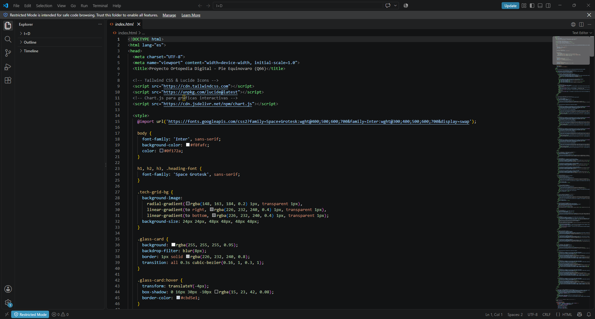
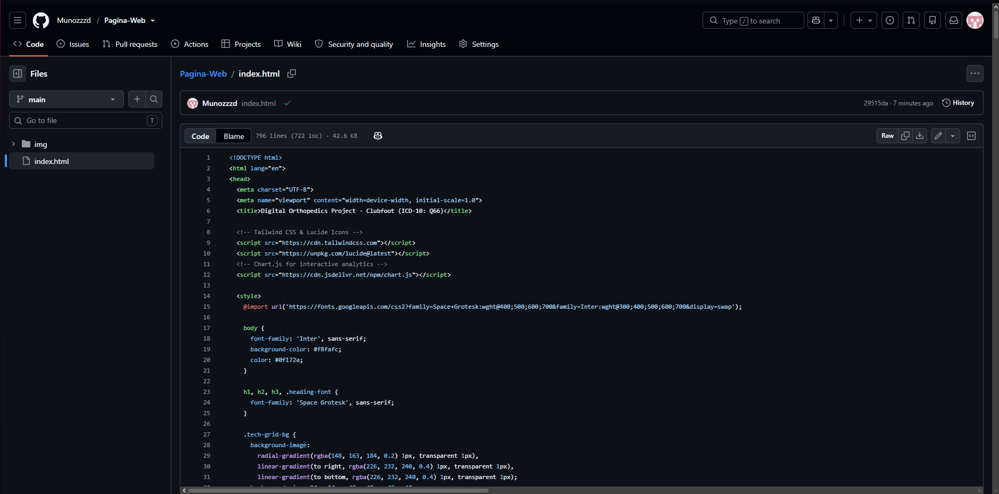
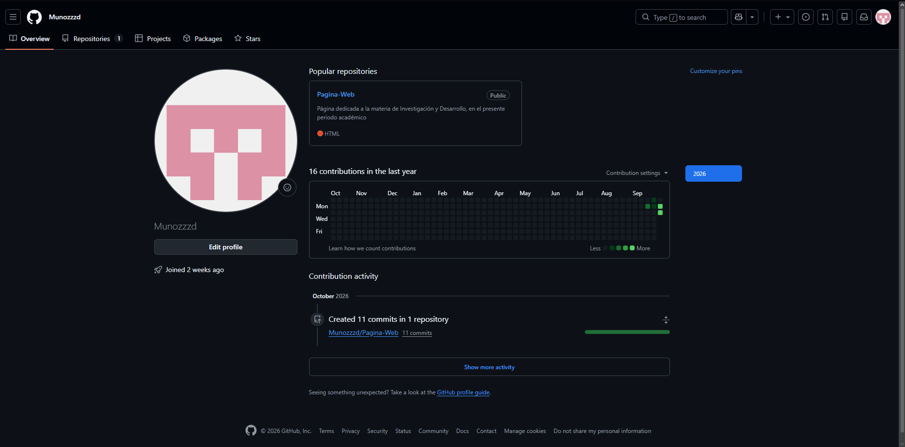
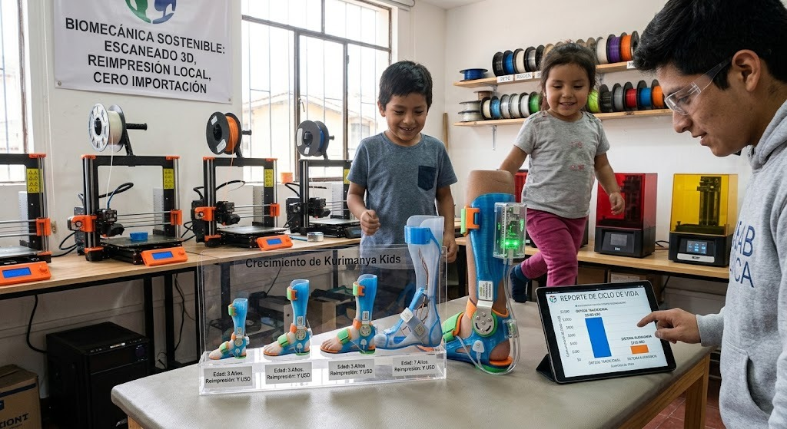
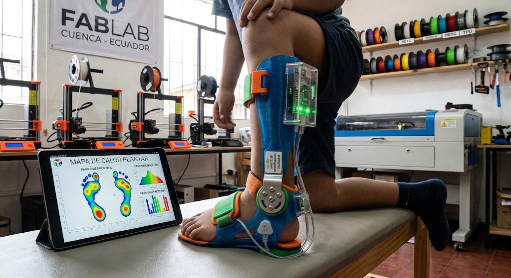

Principles & Practices, Project Management & Clinical Feasibility
Comprehensive development log detailing repository setup, distributed version control routines, early conceptual prototyping via generative design models, and public health feasibility based on official INEC hospital databases.
1. Git, GitHub Architecture & Version Control Workflow
The establishment of a distributed version control architecture is essential for open-source biomedical hardware projects. It guarantees traceability across firmware releases, provides an auditable history of mechanical CAD iterations, and serves as an automated static web host via continuous integration routines.
Git Authentication & Identity
Configured cryptographic SSH keys and verified Git global credentials linked to the institutional academic identity. Initialized local tracking utilizing standard Unix shell commands to maintain clean log commit metadata.
Repository Staging & Remote Sync
Constructed the remote repository Pagina-Web under the Munozzzd workspace. Configured the default branch to main, segregating core static files (index.html, week01.html) from multimedia digital assets (img/).
Continuous Deployment Pipeline
Integrated GitHub Pages static hosting triggered via automated webhook actions on every origin push. This ensures instantaneous deployment of technical logs without requiring third-party cloud orchestration or containerization.
Visual Evidence: Local Development to GitHub Deployment
Click on any image to open full resolution viewer
Local prototyping & code editing in VS Code

Committed HTML structure and branch tree in GitHub

Verified profile, repository status & commit activity
Technical Bottlenecks & Practical Solutions
- Folder Virtualization vs Git Trees: Git tracks file contents rather than directory nodes. To establish the target folder architecture (
img/) directly via remote management, empty directory preservation rules were adopted before staging high-resolution graphic deliverables. - Cross-Platform File System Case-Sensitivity: Windows operating systems exhibit case-insensitivity, whereas GitHub Linux runners enforce strict POSIX case-sensitivity. Assets labeled with capitalization mismatches failed during initial client requests. Standardizing strict lowercase extensions and exact string references permanently mitigated broken links.
- Cache Invalidation & CDN Latency: Aggressive browser caching caused recently pushed commits to render previous CSS stylesheet definitions. Bypassing client caches via hard refreshes (
Ctrl + F5) and validating the GitHub Actions execution log allowed us to verify correct asset delivery in real-time.
2. Project Presentation & AI-Assisted Concept Prototyping
Kurimanya Kids Vision: Closing the Pediatric Healthcare Gap
Congenital talipes equinovarus (clubfoot) is one of the most disabling musculoskeletal deformities when left untreated or poorly managed. Although the Ponseti method achieves initial clinical correction rates above 90%, the maintenance phase demands strict adherence to an abduction orthosis for up to 4 or 5 years. In Ecuador, treatment abandonment rates remain alarmingly high due to imported brace expenses ($250–$400 USD per set), rapid child growth cycles requiring full brace replacements every 6 months, and complete absence of quantitative compliance feedback for parents and physicians.
Kurimanya Kids addresses these three bottlenecks through an open-source, modular smart orthosis fabricated locally using FabLab Cuenca infrastructure (FDM additive manufacturing in technical PETG/TPU, laser-cut anatomical straps, and embedded telemetry microelectronics).

Conceptual Prototype 1: Modular Sizing & Circular Manufacturing
Illustrates the scalable physical architecture across chronological child development stages (ages 1 to 7). The high-value core (sensor telemetry pack and micrometric hinges) unclips seamlessly to be mounted into a newly 3D-printed anatomical shell, lowering refitting costs to ~$8–$12 USD per developmental jump.

Conceptual Prototype 2: Real-Time Plantargram & Biofeedback
Depicts the integration of heel-embedded force-sensitive resistors (FSR) with gamified visual feedback (LED arrays). When the infant maintains proper heel contact, visual stimulation rewards the motion, while Bluetooth Low Energy (BLE) transmits quantitative gait telemetry and bilateral weight-distribution maps to a clinical tablet app.
3. Clinical Feasibility & Epidemiological Analysis: Congenital Clubfoot (Q66)
Hospital Prevalence & Targeted Pathology in Ecuador
The technical viability of Kurimanya Kids is grounded exclusively in the clinical burden of congenital talipes equinovarus / clubfoot, classified under diagnostic code ICD-10: Q66 (Congenital deformities of feet) in the official National Hospital Discharges Registry from INEC Ecuador.
While clubfoot can be successfully corrected initially via serial casting and percutaneous Achilles tenotomy (the gold standard Ponseti method), the subsequent maintenance phase requires wearing an abduction brace (Denis Browne / Dobbs type) for up to 4 to 5 years. In Ecuador, the public healthcare system faces major hurdles in this phase: high abandonment rates driven by costly imported orthoses ($250–$400 USD), rapid infant outgrowing, and zero compliance telemetry.
Why a digital smart orthosis for Q66? Clinical literature indicates that without strict brace adherence (23 hours/day for the first 3 months, followed by 12–14 hours at night until age 4–5), deformity recurrence rates exceed 80%, often necessitating invasive posteromedial soft-tissue release surgery. The 481 registered hospitalizations in Ecuador demonstrate consistent ongoing clinical incidence that cannot rely indefinitely on scarce imported equipment.
By leveraging local digital fabrication at FabLab Cuenca, our design addresses this exact pathology by providing: (1) an indexed dynamic hinge to maintain the required 60° external rotation and 15° dorsiflexion, (2) modular resizing shells costing only ~$8–$12 USD in 3D-printed PETG/TPU to eliminate sizing obsolescence, and (3) embedded plantar sensors to objectively track nighttime compliance and heel contact.
Official Hospital Dataset: INEC.csv
National hospital discharge statistics from INEC, validating national orthopedic case volumes and provincial incidence.